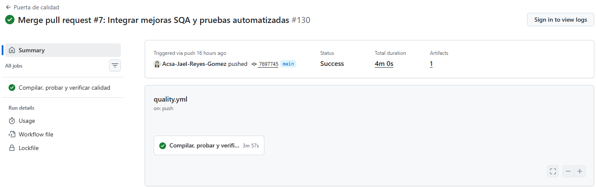
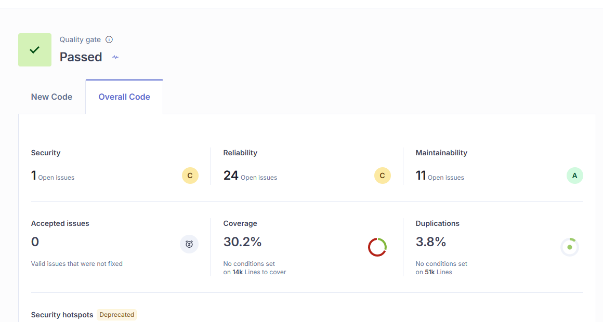

Aseguramiento de la calidad del software
Pipeline CI/CD con aseguramiento de calidad integrado
Aplicación de soporte técnico · controles automatizados para cada cambio
Acsa Jael Reyes Gómez · 3 de noviembre de 2026
01 / 10
Objetivo y alcance
Calidad incorporada al flujo de cambios
Objetivo
Verificar compilación, pruebas, cobertura y estilo antes de integrar cambios en la aplicación existente.
Alcance implementado
- Workflow de GitHub Actions para
push y pull_request. - Pruebas unitarias, de integración y regresión en Node.js.
- Puerta de cobertura y controles estáticos.
- Reportes archivados como artefactos reproducibles.
GitHub exige PR, una aprobación y checks actualizados en main, incluso para administradores. Repositorio público.
02 / 10
Sistema y herramientas
Aplicación existente: soporte técnico
- Aplicación de escritorio basada en Electron.
- Renderer para interfaz, Preload como puente y Main para lógica del sistema.
- Persistencia SQLite mediante
node:sqlite. - Las pruebas de base de datos usan SQLite en memoria y no datos operativos.
Nodepruebas y cobertura V8
TStypecheck estricto
CIGitHub Actions
Herramientas: ESLint, Prettier, TypeScript, node:test y GitHub Actions. SonarQube Cloud está integrado; su Quality Gate está aprobado. Las métricas globales y de código nuevo se presentan por separado.
03 / 10
Flujo de integración
El mismo control se ejecuta en cada cambio
push
o PR
›
Instalar
dependencias
›
Build
y pruebas
›
Cobertura
y análisis
›
Artefacto
de reportes
El workflow fija Node.js 22 e instala con npm ci usando el lockfile.
Los umbrales bloquean la ejecución cuando la cobertura cae por debajo de 75% en líneas, 60% en ramas o 55% en funciones.
04 / 10
SonarQube analiza PR y push de main; los demás controles se ejecutan en todos los push. El job espera el Quality Gate y falla si se rechaza.
Línea base y evolución
140 pruebas aprobadas en main
| Indicador | Antes de SQA | Estado final |
|---|
| Casos registrados | 25; resultado no conservado | 140 aprobados, 0 fallidos |
| Cobertura comparable | No medida | c8: 88,90 % de líneas |
| Control de cambios | Sin evidencia inicial comparable | CI, revisión y main protegida |
La línea base no permite calcular una mejora porcentual de cobertura. El alcance instrumentado creció; conservar los resultados históricos sin mezclarlos.
05 / 10
Métricas finales
Cada cobertura mide un alcance diferente
| Herramienta y alcance | Resultado | Umbral |
|---|
| c8: líneas / ramas / funciones | 88,90 % / 80,75 % / 73,61 % | 75 % / 60 % / 55 % |
| SonarQube: código nuevo | 80,1 % cobertura · 0,48 % duplicación | Cobertura ≥80 % |
| SonarQube: sistema global | 30,2 % cobertura · 3,8 % duplicación | Deuda existente documentada |
Código nuevo: 0 bugs, 0 vulnerabilidades y 0 code smells. Global: 20 bugs, 1 vulnerabilidad y 15 code smells.
Quality Gate aprobado no equivale a cero hallazgos globales. Datos públicos consultados el 03/11/2026.
06 / 10
Captura auténtica de GitHub Actions
El push de main pasó después del merge

Run 41562455432 · commit 7697745 · 140/140 pruebas y E2E aprobados.
07 / 10
Captura auténtica de SonarQube
Quality Gate aprobado y deuda visible

SonarQube main · captura 03/11/2026. Cobertura global y nueva tienen distinto alcance.
08 / 10
Conclusiones y revisión
Pruebas, análisis y revisión antes de integrar
- El PR #7 fue fusionado con revisión de Acsa-Reyes: dos eventos de aprobación de la misma cuenta.
- La API confirma main protegida: PR, una aprobación, checks actualizados y conversaciones resueltas.
- El PR #8 queda bloqueado sin aprobación; no se omite la revisión.
- SonarQube analiza PR y main; la restricción del plan en otras ramas se resuelve sin quitar los controles de pruebas y cobertura.
Lecciones: distinguir los alcances de cobertura, conservar evidencia reproducible y reconocer la deuda histórica. Video obligatorio al final.
09 / 10
Referencias y entrega
Fuentes verificables del proyecto
Entrega: PDF y enlace del repositorio en la plataforma del curso. Último paso: video MP4 de 4–5 minutos, mínimo 720p.
10 / 10